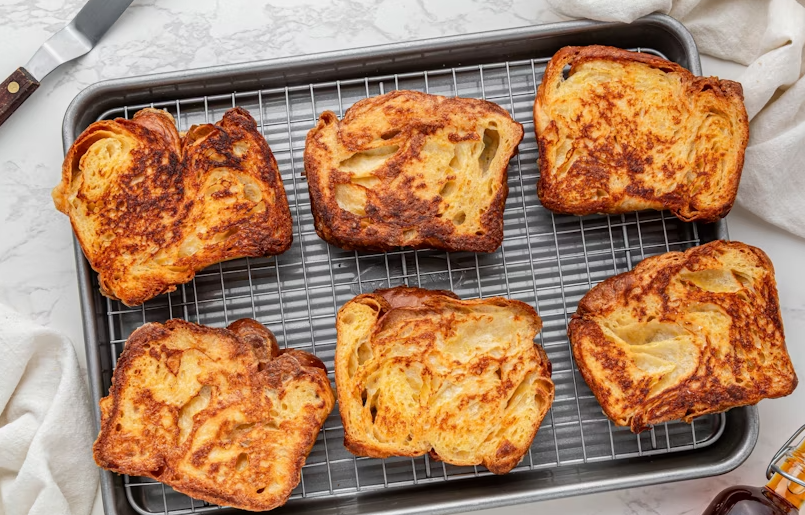
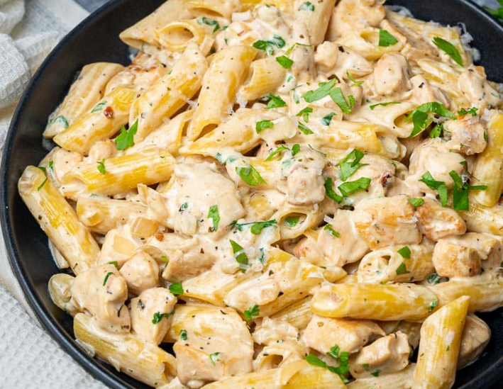

Cheesy Garlic Toast

Ingredients: Bread slices, butter, garlic paste, mozzarella cheese, oregano
Recipe
- Let 1/2 cup butter soften at room temperature.
- Add 3–4 grated garlic cloves.
- Mix in a little salt, oregano, and parsley.
- Take white or brown bread slices and spread the garlic butter on each slice.
- Heat a pan or skillet and toast each slice on both sides until golden brown.
- If using an oven, preheat to 180°C and bake for 8–10 minutes.
- Optional: Add grated mozzarella cheese on top and bake for 2 more minutes.
- Serve warm with creamy pasta or soup!
Creamy Chicken Pasta

Ingredients: Pasta, chicken, cream, garlic, black pepper, parmesan
Recipe
- Heat 1 tablespoon oil in a pan.
- Add chicken breast (small cubes) and fry until golden brown.
- Add a little salt, black pepper, and paprika powder; cook for another 2 minutes.
- In a separate pan, melt 2 tablespoons butter and add 1 tablespoon flour; lightly fry.
- Gradually add 1 cup milk while whisking to avoid lumps.
- Once sauce thickens, add 1/2 cup cream and 1/2 cup grated cheese.
- Mix in some oregano, garlic powder, and black pepper.
- Add boiled pasta (penne or fusilli) and mix well.
- Add the cooked chicken on top and gently toss.
- Garnish with fresh parsley or coriander and serve hot!